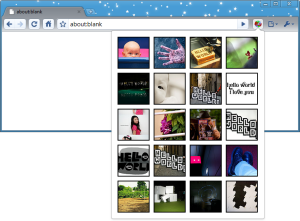
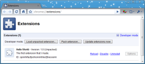

Tutorial: Getting Started (Hello, World!)
true
This tutorial walks you through creating a simple extension.
You'll add an icon to Google Chrome
that, when clicked, displays an automatically generated page.
The icon and page will look something like this:

You can develop extensions using any release of Google Chrome,
on Windows, Mac, or Linux.
Create and load an extension
In this section, you'll write an extension
that adds a browser action
to the toolbar of Google Chrome.
-
Create a folder somewhere on your computer to contain your extension's code.
-
Inside your extension's folder,
create a text file called
manifest.json,
and put this in it:
{
"name": "My First Extension",
"version": "1.0",
"description": "The first extension that I made.",
"browser_action": {
"default_icon": "icon.png"
},
"permissions": [
"http://api.flickr.com/"
]
}
-
Copy this icon to the same folder:
- Load the extension.
Bring up the extensions management page
by clicking the wrench icon
 and choosing Tools > Extensions.
and choosing Tools > Extensions.
-
If Developer mode has a + by it,
click the + to add developer information to the page.
The + changes to a -,
and more buttons and information appear.
-
Click the Load unpacked extension button.
A file dialog appears.
-
In the file dialog,
navigate to your extension's folder
and click OK.
If your extension is valid,
its icon appears next to the address bar,
and information about the extension
appears in the extensions page,
as the following screenshot shows.

Add code to the extension
In this step, you'll make your extension do something besides just look good.
-
Edit manifest.json to add the following line:
...
"browser_action": {
"default_icon": "icon.png",
"popup": "popup.html"
},
...
Inside your extension's folder,
create a text file called popup.html,
and add the following code to it:
CSS
and JavaScript code for hello_world
-
Return to the extensions management page,
and click the Reload button
to load the new version of the extension.
- Click the extension's icon.
A popup should appear that displays the contents of
popup.html.
It should look something like this:
If you don't see the popup,
try the instructions again,
following them exactly.
Don't try loading an HTML file that isn't in the extension's folder —
it won't work!
Now what?
Here are some suggestions for what to read next:
-
The Overview,
which has important conceptual and practical information
-
The
debugging tutorial,
which starts where this tutorial leaves off
-
The hosting page,
which tells you about options for distributing your extension
If you don't feel like reading, try these:
{kind=link}
{kind=link}